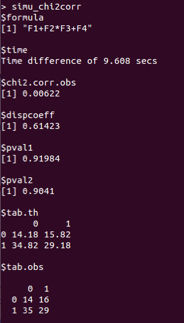
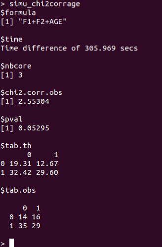

Interatrix is a user-friendly R program to detect likely pairewise parasite interactions with presence-absence data while taking known risk factors into account. The two methods it includes are based on corrections of the chi-square test of independence and on logistic regressions. The first method corrects for known risk factors of the parasites; it is described in Hellard et al. (2012). The second method also corrects also for the cumulative effect of age when age is unknown; it is described in Hellard et al. (2015).
Following is a tutorial detailing the main tasks you will carry out to estimate the corrected chi-square using the Interatrix package. This tutorial begins by helping you to install Interatrix and his dependencies. It then describes the type and format of data useable in Interatrix. The two ways to use Interatrix (through a graphical interface or through command lines) are then detailed step by step. An optional parallel computing is proposed. Finally, an example based on a theoretical data set available with the package is presented.
1 Install and launch Interatrix
1.1 Initial installation
Interatrix is a package developped in the R software whose sources are available on https://cran.r-project.org/. The R software must be installed in such a way that graphical interfaces can run once the appropriate packages are later installed. On Windows and Mac OS, this is automatically computed when the R software is installed. On Linux, the two libraries tcl and tk must be installed and R must be installed using the –with-tcltk option (see the R Installation and Administration manual on CRAN).
Once R is installed, the package Interatrix and its dependencies tcltk, tkrplot and tools must be installed using the command install.packages() in an R session. You will also need to install doParallel and foreach if you plan to use parallel computing (see Section 5).
1.2 Start with Interatrix
To launch Interatrix in an R session, the package must be loaded using library(Interatrix). The two methods previously cited can be used either through a graphical interface or with command lines.
2 Data
To use as an example, the Interatrix package holds a data set of 100 individual hosts tested for two parasites and containing missing data. It is made of 5 randomly generated host risk factors: 2 quantitative (F2 and F4, sampled in a standard normal distribution) and 3 qualitative (F1, F3 and AGE, among which AGE gives the host age classes) and 2 serological statuses (Parasite1 and Parasite2, all individuals having an independent 0.5 probability of being seropositive for each parasite). These data are in the dataInteratrix.rda R binary file.
When using your own data set, the input data must be a data frame including data for host individuals tested for both studied parasites, with the observed values of risk factors and serological statuses as columns and the host individuals as rows. The extension of the data file must be txt (data are separated by tabulations and the variables’ name are in the first row), csv (data are separated by comma and the variables’ name are in the first row), rda, Rda, rdata or Rdata. Missing data are allowed but individuals with at least one missing data are omitted in the model. Missing data must be indicated by NA. Qualitative variables must be defined as factors in R (see the as.factor() function). This is mainly needed when the explicit functions are used. Binary variables must be defined with the modalities 0 and 1.
3 Using the graphical interface
Use the InteratrixGUI() function to start the graphical interface. Dialog boxes will lead you step by step.
- In a first step, you must choose one of the two methods available in the
Interatrixpackage and validate your choice in a window like shown in Figure 1.
Then, you must indicate the location of the file containing the data to analyse. If you want to use the example data set (
dataInteratrix.rda), go to the folderdataof theInteratrixpackage.The graphical interface depends on the selected method. A window like in Figure 2 or in Figure 3 will appear when the first or the second method is chosen, respectively.
In both cases, you must designate the variables that must be defined as factors and the two variables of serological statuses (the software will automatically convert these variables into factors). Moreover, the model formula (i.e., a symbolic description of the model of risk factors) and the number of wanted bootstraps (500 by default) must be filled.
The second method is more complex and needs more parameters. You must define the antibodies’ disappearance rate of each parasite, select the age class variable and define the mortality rate of each age class (the values must be separated by ‘;’, e.g., 0.2;0.2;0.2) and the bounds of these classes (the values must be separated by ‘;’, e.g., 0;1;2;10).
You must indicate in which directory the results should be saved and the name and format of the graph that will be created. The graph can be an eps, a pdf, a png or a jpeg file.
Depending on the size of the data, the model complexity and the number of simulations, calculations may take some time and a waiting window (Figure 4) may appear. At the end of the simulations, results are stored in the chosen directory and a summary is printed to the
Rconsole.
When using the second method, parallel computing is proposed to speed up simulations (see Section 5).
4 Through command lines
When using the explicit functions, data must be loaded thanks to the function read.table() (for txt file), read.csv() (for csv file) or load() (for R binary file). As mentionned previously, all qualitative variables must be defined as factors (see the as.factor() function).
There are two functions, one for each method: chi2Corr (accounting for risk factors) and chi2CorrAge (accounting for risk factors and for the cumulative effect of age).
The chi2Corr function is written: chi2Corr(formula, data.obs, namepara1, namepara2, nsimu)
and takes as parameters:
- a formula (a string of characters),
- a data set (a data frame formatted as indicated in Section 2),
- the name of the variables corresponding to the serological statuses of the two parasites (two strings of characters) and
- the number of simulations (an integer).
The chi2CorrAge function is written: chi2CorrAge(formula, data.obs, namepara1, namepara2, nameage, w1, w2, mort, a, nsimu, nbcore = 3)
and takes as parameters:
- a formula (a string of characters),
- a data set (a data frame formatted as indicated in Section 2),
- the name of the variables corresponding to the serological statuses of the two parasites (two strings of characters),
- the name of the age variable (a string of characters),
- the antibodies’ disappearance rate of each parasite (two real numbers between 0 and 1),
- the host mortality rate within each age class (a vector of real numbers between 0 et 1, with one value per age class, separated by ‘,’, e.g., c(0.2, 0.2, 0.2)),
- the bounds of the age classes (a vector of integers with as many values as there are age classes minus one, separated by ‘,’, e.g., c(0, 1, 2, 10)),
- the number of simulations (an integer) and
- the number of cores available to set up parallel computing (3 by default; see next paragraph).
5 Parallel computing
Because it is more complex to solve and takes longer to run, we recommand to use parallel computing to optimize calculations when using the second method. It requires two R packages: doParallel and foreach. They must be installed and loaded when Interatrix is loaded.
With the graphical software version, an intermediate dialog window (Figure 5) proposes to parallelize or not the calculations. The software detects automatically the number of cores available to set up the parallel computing.
Via command lines, the user can define the optimal number of cores allocated for simulations (parameter nbcore).
6 Example with dataInteratrix.rda using the graphical interface
6.1 First method: chi-square corrected for risks factors (chi2Corr function)
Parameters taken in the example:
- formula = F1+F2*F3+F4
- data.obs = dataInteratrix
- namepara1 = Parasite1
- namepara2 = Parasite2
- nsimu = 1000
An object named simu_chi2corr is created and printed to the R console. It is a list of several statistics resulting from the simulations and reachable with $.

When a new experience is run with the same parameters, the dispersion coefficient (simu_chi2corr$dispcoeff) and the two p-values (simu_chi2corr$pval1 and simu_chi2corr$pval2) may be different but close because they result from bootstrapped simulations.
The expected frequencies (simu_chi2corr$tab.th) are the frequencies of hosts in each combination of serological statuses expected under the independence hypothesis and considering the risk factors. They are calculated with the bootstrapped data. Note that two p-values are printed to the consol; they are defined in Hellard et al. (2012).
In this example, the test is not significant; the observed corrected chi-square is within the bootstrapped distribution (red star in Figure 6). The conclusion is that the proportion of doubly positive hosts can be explained without invoking an interaction between the two parasites.
6.2 Second method: chi-square corrected for risks factors and for the cumulative effect of age (chi2CorrAge function)
Parameters taken in the example:
- formula = F1+F2+AGE
- data.obs = dataInteratrix
- namepara1 = Parasite1
- namepara2 = Parasite2
- nameage = AGE
- w1 = 0
- w2 = 0
- mort = 0.2;0.2;0.2
- a = 0;1;2;10
- nsimu = 1000
- nbcore = 3
An object named simu_chi2corrage is created and printed to the R console. It is a list of several statistics resulting from the simulations and reachable with $.

When a new experience is run with the same parameters, the p-value (simu_chi2corrage$pval) may be different but close because it results from bootstrapped simulations.
The expected frequencies (simu_chi2corrage$tab.th) are the frequencies of hosts in each combination of serological statuses expected under the independence hypothesis, considering the risk factors and the cumulative effect of age. They are calculated with the bootstrapped data.
In this example, the test is not significant and the observed corrected chi-square is whithin the bootstrapped distribution (red star in Figure 7). The proportion of doubly positive hosts can be explained by the identified risk factors and the cumulative effect of age.